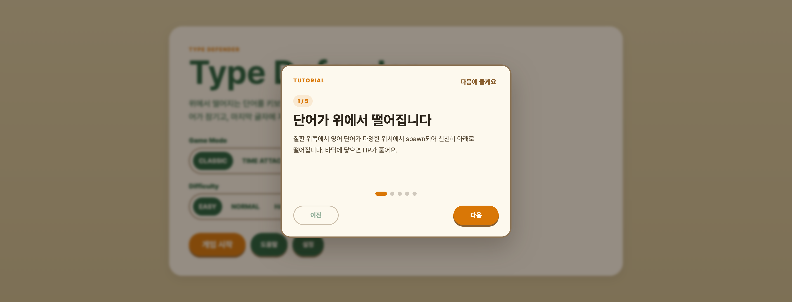
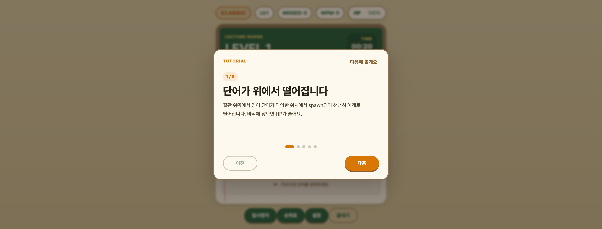
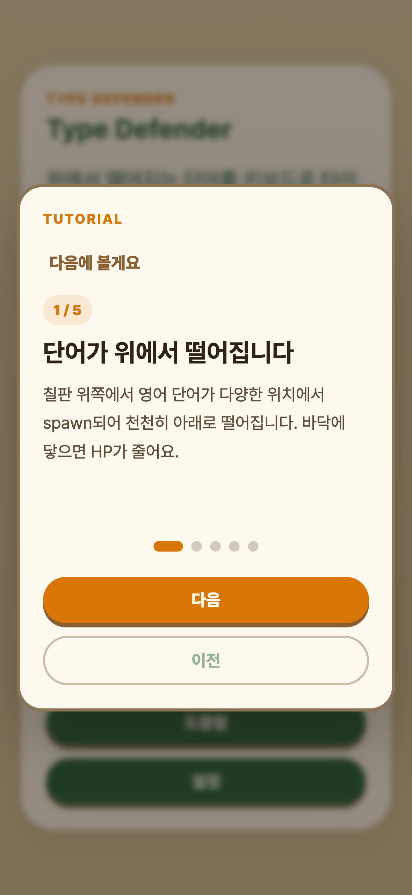

Type Defender — 최종 보고서
한국외대 오픈소스SW2026 봄
위에서 떨어지는 단어를 키보드로 타이핑해 라인을 방어하는 정통 타이핑 디펜스 게임 (ZType 스타일).
1. 프로젝트 개요
1.1 프로젝트 소개
Type Defender는 위에서 떨어지는 영어 단어를 키보드로 타이핑해 라인을 방어하는 정통 타이핑 디펜스 게임이다. ZType (Phoboslab, 2012)을 레퍼런스로 한다.
- 단어가 화면 위쪽에서 다양한 위치에 spawn되어 천천히 아래로 떨어진다
- 첫 글자를 입력하면 그 단어가 lock (노란 outline)
- 마지막 글자에 자동 처치 (Enter 키 불필요)
- 단어가 바닥에 닿으면 HP −1
- HP 0이면 학점 도장(A+/A/A-/B/C/F)과 통계가 표시된다
4가지 모드 × 3 난이도
| 모드 | HP | 타이머 | 특징 |
|---|---|---|---|
| Classic | 7/5/3 | 무제한 | 기본 모드 |
| Time Attack | 7/5/3 | 120초 카운트다운 | 시간 압박 |
| Zen | ∞ | 180초 | HP 무한, 부담 없는 연습 |
| Daily | 7/5/3 | 무제한 | 시드 단어 + 출석 도장 |
1.2 개발 배경 및 목적
- 수업: 한국외국어대학교 오픈소스SW
- 배경:
- 타이핑 게임 장르의 명작 (ZType / Typing of the Dead / Epistory)을 참고하여 학습 경험을 게임화하는 시안 E "강의 필기" 메타포로 시작
- W5 마감 후 박태준 주도 dogfood로 정통 타이핑 디펜스 (ZType 스타일)로 게임 본질 전환
- 목적:
- Vanilla JS / HTML / CSS만으로 라이브러리 없이 게임을 완성한다 (오픈소스 기여 가능성 ↑)
- PWA로 오프라인 동작 + 모바일 반응형
- Lighthouse / Playwright 자동 검증으로 품질 보증
1.3 개발 환경 및 툴
| 분류 | 도구 |
|---|---|
| 언어 / 런타임 | Vanilla JavaScript / HTML5 / CSS3 (라이브러리 의존성 0) |
| 저장 | localStorage (점수·도전과제·설정·출석) |
| 사운드 | Web Audio API |
| PWA | manifest.json + Service Worker (cache-first 전략) |
| 폰트 | Pretendard Variable + Black Han Sans + Gaegu + JetBrains Mono |
| 검증 자동화 | Lighthouse 11 + Playwright (chromium) |
| 배포 | Vercel (CDN + 자동 HTTPS) |
| 버전 관리 | Git + GitHub (GitHub Flow + Squash & Merge) |
2. 목표 및 내용
2.1 최종 목표
| # | 목표 | 달성 |
|---|---|---|
| 1 | PC 브라우저에서 단어 떨어지는 정통 타이핑 디펜스 플레이 가능 | ✅ |
| 2 | 4모드 × 3난이도 시각/동작 차이 명확 | ✅ |
| 3 | 모바일(393×851) 가로 회전 안내 + 8 viewport(320~2560) 모두 한 화면 fit | ✅ |
| 4 | PWA — 오프라인 동작 + 홈 화면 추가 | ✅ |
| 5 | Lighthouse desktop Performance ≥ 95 / mobile ≥ 85 | ✅ desktop 100 / mobile 98 |
| 6 | Playwright 자동 검증 50건+ 통과 | ✅ 79건 |
2.2 프로젝트의 내용
W1~W5 (5주 메인 작업)
| 주차 | 내용 |
|---|---|
| W1 Foundation | 디자인 토큰 37개 + 게임 설정 11섹션 + 컴포넌트 12종 + 디자인 시각화 |
| W2 Main Screens | Start / Play / Game Over scene + 학점 계산 + GameAPI publish-subscribe |
| W3 Tutorial+Pause+Settings | 보스 단어 (Lv 3+ 5%) + 레벨업 트랜지션 + Daily 출석 7일 + Tutorial 5슬라이드 + Settings 3탭 |
| W4 Mobile+Polish+Performance | 모바일 입력 + PWA 인프라 + 모바일 반응형 + 검증 자동화 |
| W5 Code Freeze+QA+Deploy | LICENSE + README + 단어 DB lint + Vercel 배포 + 발표 자료 + 회고 |
사용성 개선 시리즈 PR-A ~ PR-O (W5 마감 후 16 PR)
박태준(Tech Lead) 주도 dogfood + 핫픽스 사이클.
| PR | 핵심 변경 |
|---|---|
| #58 PR-A | Settings Lecture 탭 기능화 + difficulty 양방향 + customWords + 라이브 미리보기 |
| #59 PR-B | 콤보 글로우 3단계 + 단어 실패 화면 떨림 + 재시작 soft |
| #60 PR-C | 폰트 CDN 비동기 로드 + script defer (mobile perf 98) |
| #61 PR-D | 단어 시간 제한 시스템 |
| #62 PR-E | dogfood 핫픽스 1차 — 만료 1개씩 + softPause + viewport-fit 1024+ |
| #63 PR-F | 풀 viewport — 모바일 viewport-fit + spawn 시차 |
| #64 PR-G | word placeholder + 도전과제 황금 토스트 |
| #65 PR-H | placeholder 칠판 대비 fix + sw 자동 reload |
| #66 PR-H2 | word-field flex-shrink 0 (4px 압축 fix) + 모바일 HUD 컴팩트 |
| #67 PR-I | 모드 차이 가시화 — 배지·타이머·HP (Zen HP 숨김) |
| #68 PR-J | netbook (1024×600) Start 카드 viewport-fit |
| #69 PR-K | 정통 타이핑 디펜스 전환 — fallingWords[] + spawn/낙하/충돌 + 글자별 lock |
| #70 PR-L | 키보드 입력 시각 cue — 노트북 panel mou|se 진행 표시 |
| #71 PR-M | 메타포 정리 + 단어 mono 폰트 +20% + 학점 도장 glow |
| #72 PR-N | 입력 손실 fix + 게임 밸런스 (ZType 리서치) — 1.5초 grace + easy speedMult 0.45 |
| #73 PR-O | CHANGELOG + README 갱신 |
2.3 주요 코드 및 설명
디렉터리 구조
type-defender/
├── index.html # Start/Play/Game Over scene + 모달 6종
├── manifest.json # PWA
├── sw.js # Service Worker (cache-first)
├── css/
│ ├── tokens.css # 디자인 토큰 (색·폰트·간격)
│ └── style.css # 컴포넌트 스타일 (~3500줄)
├── js/
│ ├── config.js # 게임 설정 (모드·난이도·점수·낙하·spawn)
│ ├── wordData.js # 단어 데이터 (15 레벨 × 6 단어 + Daily 시드 + Custom)
│ ├── game.js # Game 클래스 — 핵심 로직
│ ├── ui.js # UI 메서드 (모달·HUD·도장·튜토리얼·typing-status)
│ ├── effects.js # 시각 효과 (chalkDust·typedPulse·toggleGlow·boardWipe)
│ ├── effects-bindings.js # GameAPI → Effects 라우팅
│ ├── input.js # 키 입력 + 모바일 터치 포커싱
│ ├── achievements.js # 도전과제 12개 + 출석 체크
│ ├── grade.js # 학점 계산
│ ├── sound.js # Web Audio API
│ ├── themes.js # 테마 5종
│ └── main.js # 진입점 + gameLoop
└── scripts/
├── verify.sh # Lighthouse + Playwright 통합
└── verify-*.spec.js # E2E 12 spec / 79건핵심 코드 ① — 정통 타이핑 디펜스 게임 루프 (js/game.js)
class Game {
update() { // gameLoop마다 호출 (60fps)
if (this.isPaused || this.softPaused || this.isGameOver) return;
const now = Date.now();
const dtSec = Math.min(0.1, (now - this._lastUpdateAt) / 1000);
this._lastUpdateAt = now;
// 1. 낙하 — 각 단어 y += speed × dt
for (const w of this.fallingWords) w.y += w.speed * dtSec;
// 2. 충돌 — y >= 92%면 expire
const floor = (CONFIG.CORE.FALL_FLOOR_RATIO || 0.92) * 100;
const expired = this.fallingWords.filter(w => w.y >= floor);
for (const w of expired) this._expireWord(w);
// 3. spawn — 시간 기반 (3500ms 간격)
if (now - this._lastSpawnAt > this._currentSpawnInterval() &&
this.fallingWords.length < CONFIG.CORE.SPAWN_MAX_ACTIVE &&
this.wordPool.length > 0) {
this._spawnNextWord();
this._lastSpawnAt = now;
}
// 4. 레벨업 — wordPool 비고 활성 단어 없으면
if (this.wordPool.length === 0 && this.fallingWords.length === 0) {
this.levelUp();
}
}
}핵심 코드 ② — 글자 단위 입력 처리 (ZType 패턴)
handleCharInput(char) {
if (this.isPaused || this.softPaused || this.isGameOver) return;
if (this.lockedWordId !== null) {
// lock 있음: 다음 글자 매칭
const w = this.fallingWords.find(fw => fw.id === this.lockedWordId);
if (char === w.text[w.typedIndex]) {
w.typedIndex++;
if (w.typedIndex >= w.text.length) this._destroyWord(w); // 자동 처치
}
} else {
// lock 없음: 첫 글자 매칭하는 단어 lock
const candidate = this.fallingWords.find(w => w.typedIndex === 0 && w.text[0] === char);
if (candidate) {
this.lockedWordId = candidate.id;
candidate.typedIndex = 1;
}
}
}핵심 코드 ③ — UI 렌더링 (Map 기반 element 재사용)
UI.renderFallingWords = function(game) {
const wf = document.querySelector('.word-field');
if (!this._fallingWordEls) this._fallingWordEls = new Map();
const activeIds = new Set(game.fallingWords.map(w => w.id));
// 제거된 element 정리
for (const [id, el] of this._fallingWordEls) {
if (!activeIds.has(id)) { el.remove(); this._fallingWordEls.delete(id); }
}
// 추가/갱신 — 매 frame 새 요소 만들지 않음 (perf)
for (const w of game.fallingWords) {
let el = this._fallingWordEls.get(w.id);
if (!el) {
el = document.createElement('div');
el.className = 'falling-word';
wf.appendChild(el);
this._fallingWordEls.set(w.id, el);
}
el.style.left = `${w.x}%`;
el.style.top = `${w.y}%`;
el.classList.toggle('is-locked', game.lockedWordId === w.id);
// 글자별 span (fw-typed / fw-untyped)
for (let i = 0; i < w.text.length; i++) {
el.children[i].className = i < w.typedIndex ? 'fw-typed' : 'fw-untyped';
}
}
};핵심 코드 ④ — 검증 자동화 (Playwright)
test('마지막 글자 자동 처치 — score + combo + 단어 제거', async ({ page }) => {
const result = await page.evaluate(async () => {
await WordData.loadWords();
const g = new Game('classic', 'normal');
g._lastSpawnAt = Date.now() - 9999;
g.update();
const word = g.fallingWords[0];
for (const c of word.text) g.handleCharInput(c);
return { score: g.score, combo: g.combo, lockedId: g.lockedWordId };
});
expect(result.score).toBe(10);
expect(result.combo).toBe(1);
expect(result.lockedId).toBeNull();
});3. 결과 및 느낀 점
3.1 결과 화면 및 설명
라이브 사이트: https://open-source-project-virid.vercel.app
검증 점수
100desktop perf
98mobile perf
90accessibility
96best practices
100SEO
79/79Playwright
화면 캡처

{kind=link}

{kind=link}
{kind=link}

{kind=link}

{kind=link}
화면 흐름
- Start: "Type Defender" 큰 제목 + 모드 4종 + 난이도 3종 + "게임 시작" / "도움말" / "설정"
- Tutorial (첫 진입 자동): 5슬라이드 — 단어 낙하 / 첫 글자 lock / 자동 처치 / 콤보·보스 / 시작
- Play:
- HUD: 모드 배지 (색별) + LV + MISSED + WPM + HP (Zen은 숨김)
- 칠판:
LEVEL N제목 + 모드별 타이머 - word-field: 단어들이 다양한 x 위치에서 낙하 (mono 폰트, 황금 보스 강조)
- 노트북 panel:
mou|se큰 글씨 진행 표시 (typed 녹색 / cursor / untyped 회색)
- Game Over: 학점 도장 (학점별 box-shadow glow) + 점수·콤보·레벨·WPM·정확도 + 다시 도전 / 메뉴로
3.2 느낀 점
📝 팀원 각자 작성 영역
- 박태준 (Tech Lead): ___________________________________
- 전재형 (Team Lead): ___________________________________
- 김지우 (Components): ___________________________________
3.3 기타 팀활동 관련 하고싶은 말
📝 팀원 각자 작성 영역
4. GitHub
4.1 Commit History
- 총 commits: 61건 (main)
- 시점별 분포: W1~W5 30+ commits, 사용성 개선 시리즈 16 PR (squash-merge로 16 commits 추가)
- 상세 history: commits/main
- CHANGELOG: CHANGELOG.md — W1~W5 + PR-A~O 16건 전체 정리
4.2 Issue & Pull Requests
- 총 Issues: 17건 (모두 closed)
- 총 PRs: 55+ 머지 (W5까지 39 + 사용성 개선 16)
- Open Issues / PRs: 0건 (모두 정리)
대표 PR (사용성 개선 시리즈, 16건)
| PR | 제목 |
|---|---|
| #58 | feat(settings): Lecture 탭 기능화 + 라이브 미리보기 + 양방향 동기화 (PR-A) |
| #59 | feat(effects): 시각/입력 피드백 polish + 재시작 soft (PR-B) |
| #60 | perf(html): 폰트 비동기 로드 + script defer (PR-C) |
| #61 | feat(game): 단어 시간 제한 시스템 추가 — D-1 (PR-D) |
| #62 | fix(dogfood): viewport-fit + softPause + 만료 1개씩 (PR-E) |
| #63 | fix(viewport): 모바일 viewport-fit + 단어 spawn 시차 (PR-F) |
| #64 | feat(polish): word placeholder + 도전과제 토스트 강화 + 문서 (PR-G) |
| #65 | fix(placeholder): 칠판 위 placeholder 색 + sw 자동 reload (PR-H) |
| #66 | fix(layout): word-field flex-shrink 0 + 모바일 HUD 컴팩트 (PR-H2) |
| #67 | feat(modes): 게임모드 차이 가시화 — 배지·타이머·HP (PR-I) |
| #68 | fix(viewport): 작은 세로 viewport(≤700px) Start 카드 컴팩트 (PR-J) |
| #69 | feat(game): 정통 타이핑 디펜스 — 단어 낙하 + 글자별 lock (PR-K) |
| #70 | feat(ux): 키보드 입력 시각 cue + lock 단어 진행 표시 (PR-L) |
| #71 | feat(ux): 메타포 정리 + 단어 시각 강화 + 학점 도장 polish (PR-M) |
| #72 | fix(balance): 입력 손실 + 게임 밸런스 (ZType 리서치 기반) (PR-N) |
| #73 | docs: CHANGELOG + README 갱신 (PR-O) |
4.3 Contributors
| 이름 | 역할 | GitHub | Commits |
|---|---|---|---|
| 박태준 | Tech Lead · Infrastructure | @puze8681 | 44 |
| 김지우 | Components · Game Core | @oyend | 9 |
| 전재형 | Team Lead · UI Design | @202402770-pixel | 8 |
역할 분담 SoT: WORK_PLAN.md
5. 회의록 보고서
📝 팀원 작성 영역 (날짜 채움 필요)
- W1 회의 — 시안 E "강의 필기" 메타포 확정, 디자인 토큰 / 컴포넌트 분담
- W2 회의 — 학점 시스템 / GameAPI 구조 / 기획서 정렬
- W3 회의 — 보스 단어 / 레벨업 트랜지션 / Daily 출석
- W4 회의 — 모바일 / PWA / 검증 자동화
- W5 회의 (2026-05-28) — Code Freeze / 배포 / 발표 자료 / 회고
- 사용성 개선 결정 회의 — 박태준 단독 dogfood 사이클 → 메타포 폐기 → 정통 타이핑 디펜스
부록 A — 사용성 개선 시리즈 메타 회고
박태준 단독 dogfood 5단계
- 시안 E 메타포로 W5 마감
- PR-A~G — 사용성 개선 (Settings / 콤보 / 폰트 / 단어 시간 제한 / 모바일 / placeholder)
- PR-H~J — dogfood 핫픽스 (placeholder 대비 / word-field 압축 / 모드 차이 / netbook)
- PR-K — 메타포 폐기 → 정통 타이핑 디펜스 (ZType 스타일)
- PR-L~O — 정통 게임 완성 (입력 cue / 메타포 텍스트 정리 / 밸런스 / 문서)
박태준 dogfood가 잡은 진짜 버그 7건
(자동 spec 79건이 못 잡은 사용자 경험 결함)
- PR-E — 메뉴 만지는 5-8초 즉사
- PR-F — 60fps 호출에 즉사 무효화
- PR-H — 칠판 위 색 대비 + PWA cache 정책
- PR-H2 — word-field flex shrink 4px 압축
- PR-I — 4모드 시각 차이 0
- PR-L — 입력창 어디 있는지 불명
- PR-N — 빠른 입력 손실 + 즉사 밸런스
ZType 리서치 적용 (PR-N)
- ZType (Phoboslab, 2012) 분석 + Flow Theory (Csikszentmihalyi) + Bushnell's Law
SPAWN_INITIAL_DELAY 1500ms,easy speedMult 0.45,SPAWN_MAX_ACTIVE 4
부록 B — 라이선스
MIT License — 사용된 폰트·사운드·라이브러리의 개별 라이선스는 LICENSE 파일 하단 참조.
이 보고서는 박태준이 작성한 초안입니다. 3.2 느낀 점 / 3.3 기타 팀활동 / 5. 회의록은 팀원 각자 작성 필요.